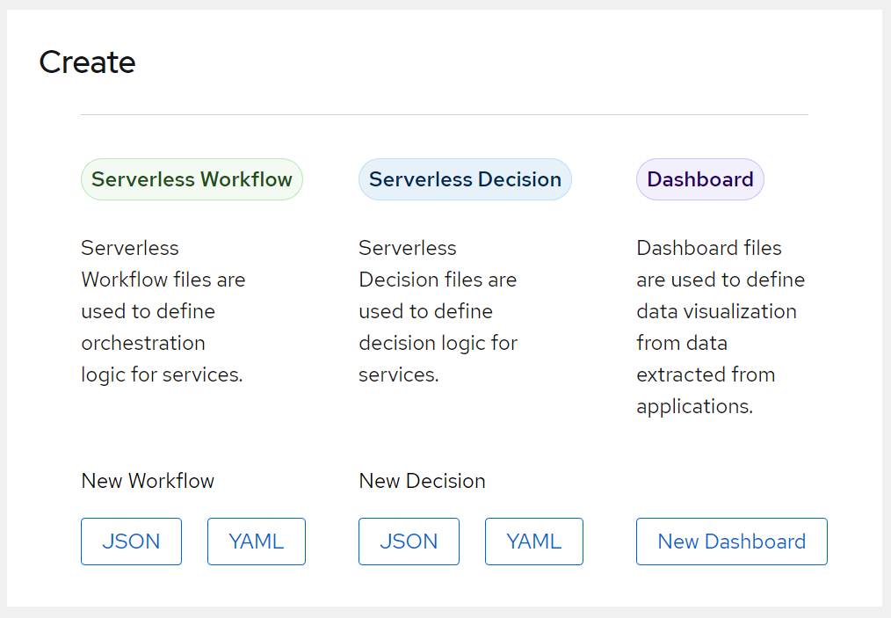

Serverless Logic Web Tools
The Serverless Logic Web Tools is a web application that enables you to create and synchronize your Serverless Workflow, decision files, and dashbuilder files in a single interface. Also, the Serverless Logic Web Tools application provides the integrations that are needed to deploy and test the Serverless Workflow models in development mode.
The Serverless Logic Web Tools provides three different editors for your projects, including
-
Serverless Workflow editor for
.sw.jsonor.sw.yaml|ymlfiles -
Serverless Decision editor for
.yard.jsonor.yard.yaml|ymlfiles -
Dashbuilder editor for
dash.yaml|ymlfiles
For an improved experience when previewing your Serverless Workflow, see Enabling Kogito Serverless Workflow Visualization in Serverless Logic Web Tools.
Creating a workflow model in Serverless Logic Web Tools
You can start by creating a new model from scratch or using one of the samples provided.
-
Go to the Serverless Logic Web Tools web application.
-
On the Home page, select the type of model you want to create and click the button corresponding to the file type you wish such as JSON or YAML.
Figure 2. Create section in Serverless Logic Web ToolsA new workspace is created, containing a single file named as Untitled of the selected type. Click on the name to rename the file.
-
Edit your workflow file, which updates the preview on the right-side of the editor.
The workflow files in Serverless Logic Web Tools are saved automatically after each change. The files are persisted in the browser, but you can sychronize the file using GitHub integration. For more information about GitHub integration, see Integrating your Serverless Workflow project in GitHub using Serverless Logic Web Tools.
Found an issue?
If you find an issue or any misleading information, please feel free to report it here. We really appreciate it!